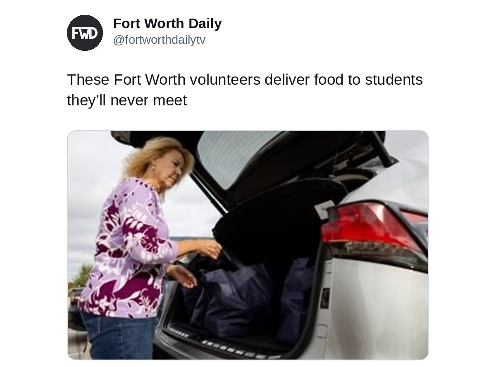

FWD
Fort Worth Daily
Just now · 🌎 · community · template writer
Just now · 🌎 · community · template writer
Volunteers with Communities In Schools of Greater Tarrant County deliver food to students facing food insecurity. Michelle Boone checked each navy blue reusable bag. Apples, oranges, onions — all there. Then she spotted the red jars of Prego pasta sauce in a couple of bags.

FWD
story + scoring
{
"source": "Fort Worth Report",
"kind": "rss",
"score": 1.3031,
"relevance": 3,
"url": "https://fortworthreport.org/2026/11/25/these-fort-worth-volunteers-deliver-food-to-students-theyll-never-meet/",
"image_license": "cc-by-nd",
"image_credit": "Photo: Elvis Martinez-Cartagena | Fort Worth Report (CC BY-ND)"
}